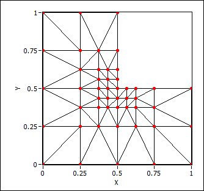

The first step in the finite element method is to separate the domain into discrete elements. The union of these elements covers the whole domain. The elements interconnect at discrete grid points where you want to solve the PDE numerically. The grid points of an element do not lie in the interior or on the edge of another element.
One common element in 3D space is the tetrahedral element.
Two common elements in 2D space are the triangle and rectangle. The following figure shows triangulation on an L-shaped domain.
